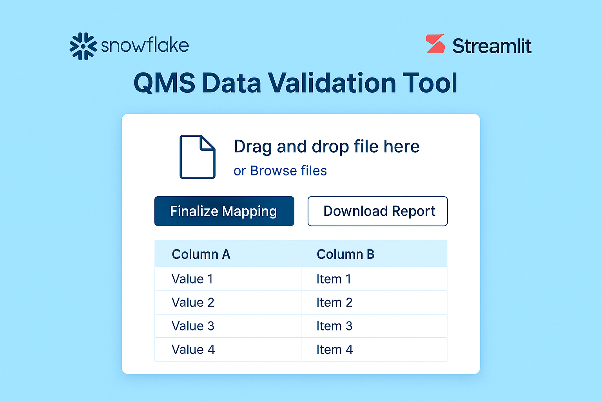

A self-service web app that automates validation of Trackwise (QMS) Excel exports
against Snowflake EDW views. This tool reduces manual RAQA effort, improves data integrity,
and provides business users with an intuitive way to run complex comparisons.


End-to-end SQL data cleaning project where I standardized formats, fixed missing values,
split address fields, removed duplicates, and prepared the dataset for downstream analytics.

Advanced SQL exploration using joins, CTEs, window functions, and views to analyze mortality,
infection rates, continent-level trends, and vaccine distribution patterns.

A collection of interactive Tableau dashboards covering COVID analysis, survey insights, KPIs, and business metrics.

Power BI dashboard analyzing salaries, satisfaction, tool usage, and roles across the data industry.
Built with DAX, Power Query, and a clean star schema model.

Python-based exploratory analysis looking at ratings, genres, budgets, gross earnings,
and correlations to identify which film attributes drive performance.

An Excel dashboard analyzing bike purchasing patterns using PivotTables, slicers, and demographic segments.
{kind=link}